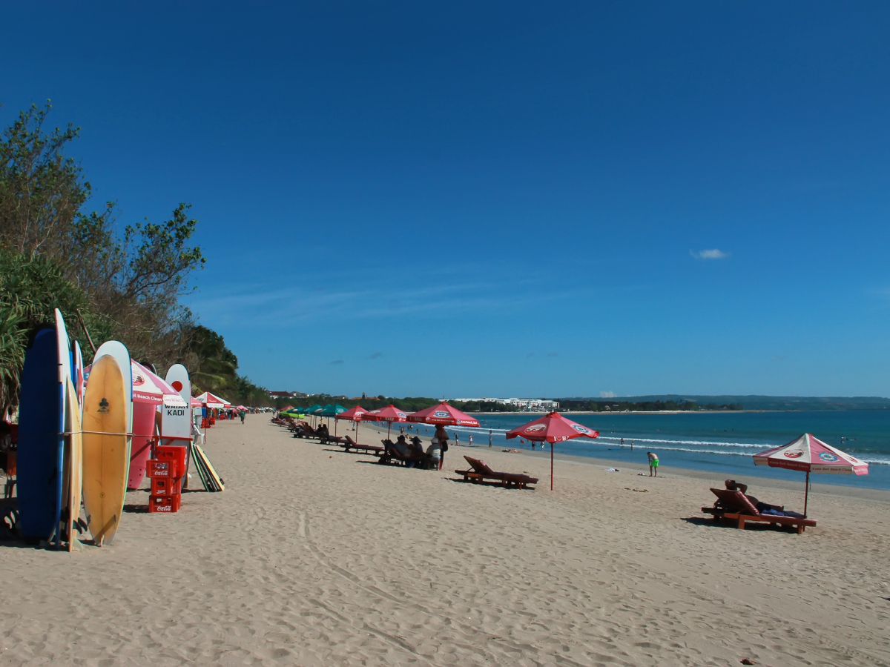

Selamat Datang di Katalog Kami!
Disini ada wisata dari Indonesia sama dari luar negeri. Tinggal pilih mau liburan kemana.

Foto di atas: Pantai dengan air jernih, salah satu contoh wisata yang ada di katalog kami.
Kami bikin katalog ini buat bantu kalian yang bingung mau liburan kemana. Ada yang suka pantai, ada yang suka gunung, ada yang suka sejarah, semuanya ada disini. Harganya juga udah kami tulis, jadi bisa nabung dulu sebelum berangkat.
Kenapa Harus Pilih Katalog Kami?
1. Harganya Jujur - Udah termasuk tiket, ga ada biaya siluman.
2. Gampang Dipesan - Tinggal chat WA, langsung dibales admin.
3. Banyak Pilihan - Ada 3 wisata nasional + 3 wisata internasional.
4. Cocok Buat Pemula - Ada info visa, mata uang, sama tips hemat.

Liburan itu ga harus mahal, yang penting seru bareng temen / keluarga.
Liburan Kita Sejauh Ini
500+ Orang Udah Liburan Bareng Kami
6 Destinasi Wisata
4.9 / 5 Rating dari Pelanggan
100% Pasti Berangkat, Ga Ada PHP
Cara Lihat Katalog Ini
1. Klik menu Nasional kalau mau liburan di Indonesia aja.
2. Klik menu Internasional kalau mau ke luar negeri.
3. Klik menu Info & Kontak buat liat tips liburan + cara pesan.
Scroll ke bawah aja terus, semua wisatanya udah kami urutin dari yang paling murah sampai yang paling jauh.
Yuk scroll ke bawah, pilih liburan impian kalian! 👇
⭐ Kata Mereka Yang Udah Liburan
"Bromo-nya bagus banget, sunrise-nya worth it banget padahal dingin!" - Andi, Mojokerto
"Ke Singapura cuma bawa paspor doang, gampang banget ternyata." - Sinta, Surabaya
"Admin-nya fast respon, ditanya jam 11 malem masih dibales." - Budi, Sidoarjo
🇮🇩 WISATA NASIONAL

1. Pantai Kuta - Bali
Pantai yang paling terkenal di Bali. Pas sore sunsetnya bagus banget, banyak bule main surfing juga.
Lokasi : Badung, Bali
Harga Tiket : Gratis
Jam Buka : 24 Jam

2. Gunung Bromo - Jawa Timur
Gunung yang terkenal sama sunrise-nya. Ada kawah yang masih ngebul, sama lautan pasir yang luas banget. Naik jeep dulu, terus liat matahari terbit dari atas bukit.
Lokasi : Probolinggo, Jawa Timur
Harga Tiket : Rp 30.000
Jam Buka : 00.00 - 12.00

3. Raja Ampat - Papua
Kalau dilihat dari atas, pulau-pulaunya kecil-kecil warna hijau, airnya warna tosca. Tempat diving terbaik di dunia, ikannya banyak dan warna-warni.
Lokasi : Papua Barat
Harga Tiket : Rp 500.000
Jam Buka : 07.00 - 17.00
🌍 WISATA INTERNASIONAL

1. Menara Eiffel - Paris, Prancis
Menara yang paling terkenal di dunia. Kalau malam lampunya nyala, romantis banget.
Lokasi : Paris, Prancis
Mata Uang : Euro
Visa : Perlu Visa Schengen
Perkiraan Biaya : Rp 15.000.000 / 5 Hari

2. Tokyo - Jepang
Kota yang maju banget, ada Gunung Fuji juga. Kalau bulan Maret ada bunga sakura.
Lokasi : Tokyo, Jepang
Mata Uang : Yen
Visa : Bebas Visa 15 Hari
Perkiraan Biaya : Rp 12.000.000 / 5 Hari

3. Marina Bay Sands - Singapura
Gedung yang ada kolam renangnya di atas. Paling dekat dari Indonesia, naik pesawat cuma 2 jam.
Lokasi : Singapura
Mata Uang : Dollar Singapura
Visa : Bebas Visa 30 Hari
Perkiraan Biaya : Rp 5.000.000 / 3 Hari
1. Dokumen yang Dibawa
Kalau wisata nasional cukup bawa KTP. Kalau internasional harus bawa Paspor. Paspor minimal masih berlaku 6 bulan ya.
2. Mata Uang
Indonesia pake Rupiah. Singapura pake Dollar SGD. Jepang pake Yen. Eropa pake Euro. Jadi harus tukar uang dulu sebelum berangkat.
3. Tips Biar Hemat
- Pesan tiket jauh-jauh hari biar murah
- Bawa bekal / makan di tempat yang murah
- Cek cuaca sebelum berangkat
- Jangan lupa bawa powerbank sama obat-obatan
4. Cara Pesan
Pilih wisatanya, terus hubungi admin lewat WA. DP 30% dulu, sisanya dilunasi sebelum berangkat.